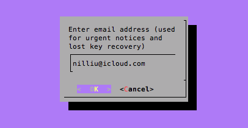
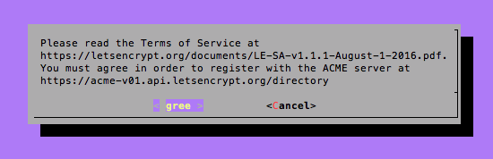
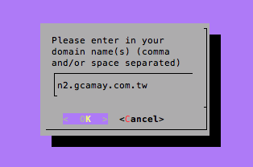
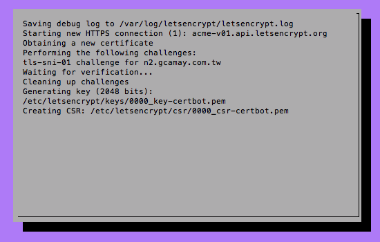
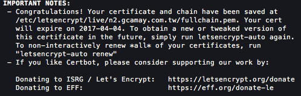
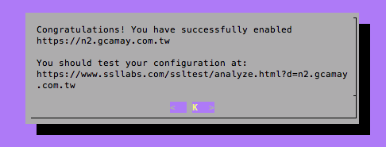

Setup your own Parse server
> Env. setup
For OS X,
we will need following packages as basic requirements:
- Homebrew
- Node.js
- Git
- GitHub
- ATOM or any IDE editor
> Mongodb installation
And we install a instance of Mongodb server on our own server,
here I choose to install on my own DigitalOcean server.
|
|
then, we will need to create our own mongod.service file,
then, we can start mongodb now.
> install Let's Encrypt and retrieve a certificate
Let’s Encrypt is a new Certificate Authority
that provides an easy way to obtain free TLS/SSL certificates.
then we will need the
bc package installed.
|
|
and we clone letsencrypt repository from GitHub
retrieve initial certificate



however, if you pretty sure your DNS setup was correct,
but you see following error, you should go take a nap and come back later.DNS problem: query timed out looking up CAA for xxx.com
anyway, I get the certificate after couple tries, 🤣


and since it will expired in 90 days,
we should setup auto renew by following commands.
then we run once to do setup and confirmation.

> get clone of parse-server application
|
|
> modify setting in index.js
TIPS: you can use md5sum(ubuntu) or md5(osx) command to generate appId and masterKey
|
|
> troubleshooting warn: Unable to ensure uniqueness for usernames…
if you got this
>
warn: Unable to ensure uniqueness for usernames: MongoError: auth failed
make sure you have no any special characters inside your password